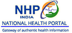

<div class="footer-dark">
    <footer>
        <div class="container">

            <div class="row">
                <div class="col-sm-6 col-md-3 item">
                    <h3>Looking for Blood</h3>
                    <ul>
                        <li><a href="#">Blood Availability</a></li>
                        <li><a href="#">Thalassemia Request</a></li>
                    </ul>
                </div>
                <div class="col-sm-6 col-md-3 item">
                    <h3>Want to Donate</h3>
                    <ul>
                        <li><a href="#">Donor Login</a></li>
                        <li><a href="#">Appointment for Blood Bank</a></li>
                    </ul>
                </div>
                <div class="col-md-6 item text">
                    <h3>e-Rakt Kosh</h3>
                    <p>eRaktKosh was Inaugurated on 7th April 2016 by Hon'ble Minister of Health and Family Welfare, Sh.
                        J P Nadda.</p>
                </div>
                <div class="footer-icon">
                    <a href="#"></a><a
                        href="#"></a><a href="#"></a>
                    <a href="#"></a>
                </div>
            </div><br>
            <p class="copyright">Terms & Conditions | Privacy Policy | Accessibility Statement | Last Updated : May 18 2022 | Site Map</p>
        </div>
    </footer>
</div>